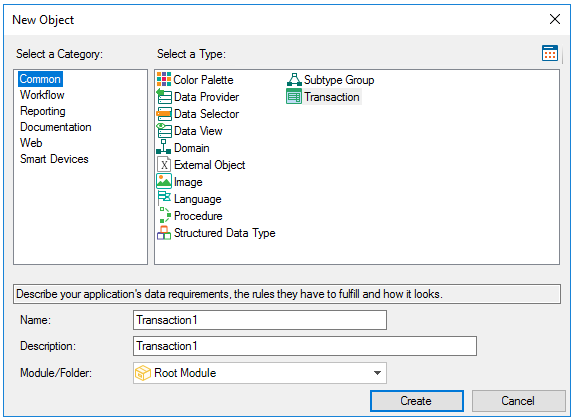
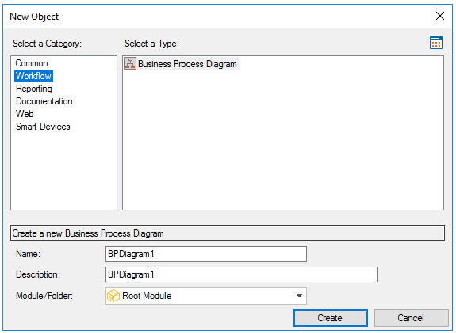
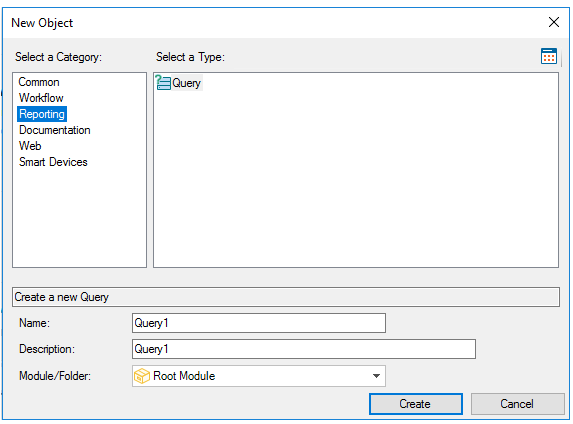
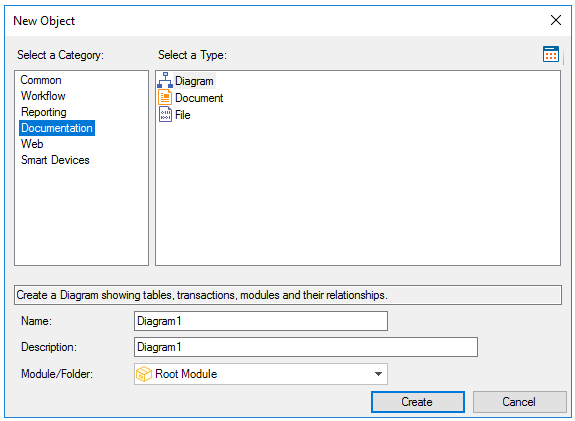
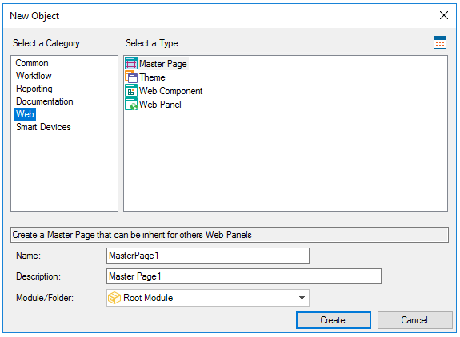
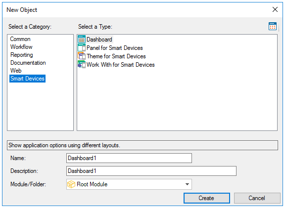

A Knowledge Base is made up of the following types of GeneXus Objects (grouped by categories):






You can define the following object types:
The concept of GeneXus Object has nothing to do with OOP objects.